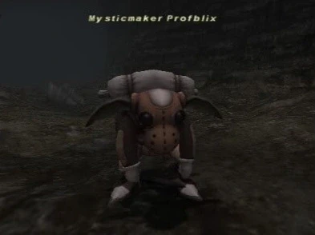

Level 75 reference · Zenith rules
|
Job: Black Mage Notorious Monster |
 Image source |


|
Zone |
Level |
Drops |
Steal |
Spawns |
Notes | ||||||
|
50-52 |
(I-9)/(J-9) |
A, L, S
| |||||||||
|
HP = Detects Low HP; M = Detects Magic; Sc = Follows by Scent; T(S) = True-sight; T(H) = True-hearing JA = Detects job abilities; WS = Detects weaponskills; Z(D) = Asleep in Daytime; Z(N) = Asleep at Nighttime | |||||||||||
 Image source
Image source
Notes:
- 2 - 2'1/2 hours (Usually on 2'15") Timed Spawn.
- Not a Lottery Spawn or Forced Spawn; nothing needs to be killed for him to pop.
- Around 4200HP
- Special ability: Manafont.
- Can cast all Black Magic spells up to level 55. This includes Water III, Freeze, Tornado, and Quake.
- Immune to Stun (spell) but not Head Butt.
- Susceptible to Sleep, but it is resisted often.
- Highly resistant to Silence.
- Soloable at Level 65+; Utsusemi is recommended.
- Drop rate is fairly favorable, with noticeable effect from Treasure Hunter.
- Can be Mugged for upwards of 2,000 gil.
Adapted from Eden Wiki: Mysticmaker Profblix · Contributors and history · CC BY-SA 4.0. Revision 1622. Layout, links and optional background text adapted for Zenith.